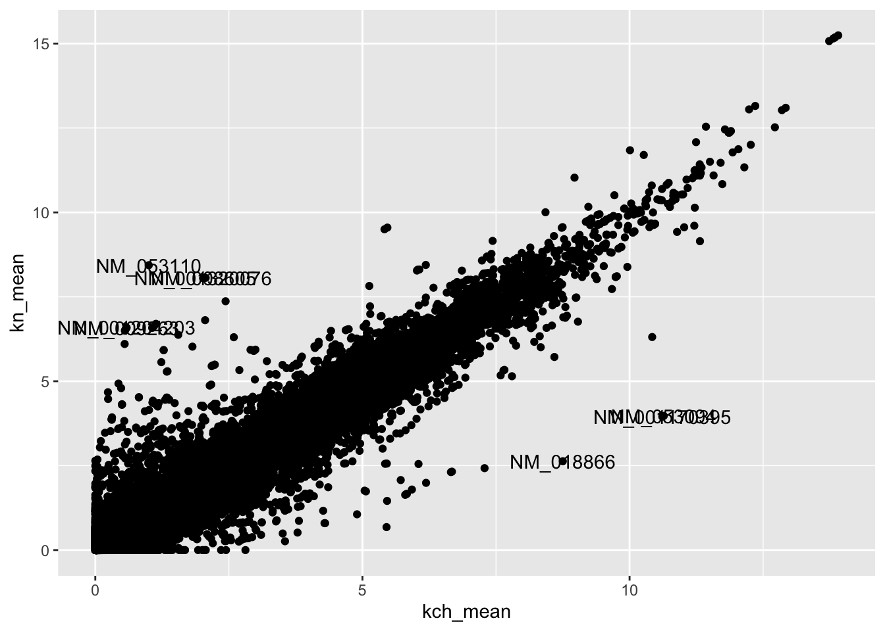

Warning: package 'tidyr' was built under R version 4.1.2
Warning: package 'readr' was built under R version 4.1.2
── Conflicts ────────────────────────────────────────── tidyverse_conflicts() ──
x dplyr::filter() masks stats::filter()
x dplyr::lag() masks stats::lag()
Now we can use read_excel() from the readxl package to load our excel spreadsheet. We can use the functions readr:read_csv() or readr:read_tsv() from the readr package to load .csv and .txt files.
# read in our datatb1 <- readxl::read_excel(path ="../Data/Source/1-s2.0-S107476132030159X-mmc3.xlsx")
That’s a lot of data, lets only keeps a small part that we want to practice with for now. To do this let’s keep the first two columns, which have gene identifier information, and lets keep the next 4 column which are replicate RNA-seq data for two conditions. To keep these columns, we will use the dplyr::select() verb, which operates on columns.
# this format declares which columns to keep in order
We can also pipe commands from left to right using magrittr %\>% operator. This allows us to chain operations together so that we don’t need to define a bunch of variables to store in memory, or overwrite variables by reusing variable names. Reusing variable names can lead to bugs in our analyses (if we aren’t careful)!
Now we have some tidy data, let’s compare the replicates by making a scatterplot! We can accomplish this using ggplot2 and the geom_point() layer
Notice that we pipe our tidy data into ggplot2 as before with %\>%. However, for assembling a ggplot script, we instead ‘add’ each component together in series using the +. This happens after initiating the ggplot() function call. After this point, we should for now think of the data as no longer requiring manipulation using function outside of ggplot context. See Hadley Wickham’s answer for a better understanding on why ggplot2 uses + and not %\>%.
This works, but we notice here that the RNA-seq data is not normally distributed. Instead it is log normal. This means if we want to best visualize a lot of genes at the same time, we should first transform them. We accomplish this by adding 1 to each data point, then taking the log base 2 of each data point: log2(dataExample + 1). This transform can be easily wrapped into the ggplot code. To learn more about how to use R to compute logarithms and exponents, click this link or type ?log() into the R console.
But now we want to compare the conditions to each other instead of comparing the biological replicates. To do that we need to summarize the data and compute the mean values. This is accomplished using dplyr::mutate.
First read a little about mutate() and across(). These are powerful tools for data transforms, but require some practice. They also require careful attention to the logic to ensure operations are occurring as you desire.
?mutate()?across()
Now lets calculate the within group means for our replicates. But before we do that, we should remember we also need out data to be log2(data+1) transformed.The challenge is we need to tell R that we want to transform each cell from the columns we point it to. We can accomplish this by using the vector function dplyr::across inside of mutate. There are many useful strategies for processing data by combining the mutate verb and across function.
tb1 %>%mutate(across(# define the columns to mutate .cols =3:6, # define the function, the '.' represents the data in each cell .fns =~log2(. +1) ) )
Now pipe the log normalization into a mean calculation, again using dplyr::mutate.
tb1 %>%mutate(across(# define the columns to mutate .cols =3:6, # define the function, the '.' represents the data in each cell .fns =~log2(. +1) ) ) %>%mutate(kch_mean = (kch_rep1 + kch_rep2)/2,kn_mean = (kn_rep1 + kn_rep2)/2 )
Now let’s check our code is working by independently computing a test case. We can identify some test data by ‘slicing’ out a row using the dplyr::slice verb and selecting the columns to compute.
Does the value equal what we got above? What is different?
tb1 %>%mutate(across(# define the columns to mutate .cols =3:6, # define the function, the '.' represents the data in each cell.fns =~log2(. +1) ) ) %>%mutate(kch_mean = (kch_rep1 + kch_rep2)/2,kn_mean = (kn_rep1 + kn_rep2)/2 ) %>%slice(1) %>%select(7)
# A tibble: 1 × 1
kch_mean
<dbl>
1 5.35
Now lets add these components together and make the comparison scatter plot. Remember that now we are plotting the newly created variable that we generate within the piped commands. Thus we need to provide those variable names to geom_point(). And since we already log transformed, we should not do it again inside the ggplot code block. Note: here I am stashing the transformed data as a new variable. I then use this new variable to pipe into ggplot on a new coding line. We will use this variable further below.
Ok great, but now we really want to know the identity of the genes with the largest differences! Let’s make a new variable with only those genes. We normally accomplish this using differential expression analysis. Today let’s use a simpler strategy by just comparing the fold-change.
Remember, in logarithmic mathematics, log2(x+1) - log2(y+1) is equal to log2((x+1) / (y+1)). Since our data is already log transformed, the fold change is computer by comparing the difference of the numbers.
Ok, now lets identify the instance were the logFC is > 1 or < -1. In other words, a fold change greater than ‘2’. For this we will use a new dplyr verb, dplyr::filter, which operates on data rows. We also will need to use an R logical operator. With R, | is equivalent to or, & is equivalent to and. Read more here: https://www.statmethods.net/management/operators.html
This yields a lot of ‘different’ genes! Lets make our space smaller by being more restrictive. Lets also generate a new variable with this smaller data set.
Ok, 8 genes is a small enough set for now. Now lets add labels to our scatter plot above with the identifier information for these genes. We can accomplish this in several ways. One way is to overlay the text from the new filtered variable using geom_text(). In this case we must define the source of the data and the x and y positions must be the same. We also must supply the identity of the column containing the labels.
tb2 %>%ggplot() +geom_point(aes(x = kch_mean, y = kn_mean)) +geom_text(data = tb3, aes(x = kch_mean, y = kn_mean, label = accession))

Ok, that’s not bad, but a gene name would be better. Unfortunately, our gene names are buried in with a lot of information. Let’s extract it! That is made easy with columns using the tidyr::separate verb. Read about it first:
?tidyr::separate()
tb3 <- tb2 %>%mutate(logFC = kch_mean - kn_mean ) %>%filter(logFC >6| logFC <-6) %>%separate(col =2, into ="gene", # this part is tricky and follow 'regular expression' rules sep ="\\|", remove =TRUE, extra ="drop")
Now lets regenerate the scatter plot with the gene names labeled instead.
tb2 %>%ggplot() +geom_point(aes(x = kch_mean, y = kn_mean)) +geom_text(data = tb3, aes(x = kch_mean, y = kn_mean, label = gene))
Pretty good, but those duplicate gene names from splice variant accessions are cause the plot to look blurry. We can remove those without much forethought using the dplyr::distinct verb. That’s not the best idea long term, but useful for now. I will apply this to the initial data being plotted and also inside geom_text().
Now we can stack it all together. Into one tibble. And use that tibble for our plot. Which also provides the opportunity to illustrate that dplyr functions can be layered inside of gglot functions.
tb4 <- readxl::read_xlsx(path ="../Data/Source/1-s2.0-S107476132030159X-mmc3.xlsx") %>% dplyr::select(1:6) %>% dplyr::rename(accession =1,gene =2,kch_rep1 =3,kch_rep2 =4,kn_rep1 =5,kn_rep2 =6 ) %>%separate(col =2, into ="gene", # this part is tricky and follow 'regular expression' rulessep ="\\|", remove =TRUE, extra ="drop") %>%distinct(gene, .keep_all =TRUE) %>%mutate(across(# define the columns to mutate .cols =3:6, # define the function, the '.' represents the data in each cell .fns =~log2(. +1) ) ) %>%mutate(kch_mean = (kch_rep1 + kch_rep2)/2,kn_mean = (kn_rep1 + kn_rep2)/2 ) %>%mutate(logFC = kch_mean - kn_mean )tb4
Finally, we have a plot that we may want to share. This is easy with ggplot using ggave(). We can either make the plot itself into a variable, or simply generate an image using the last ggplot created.